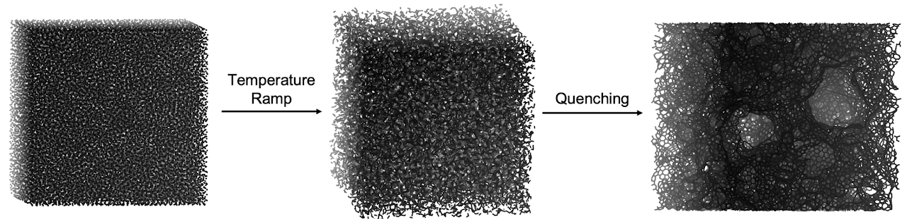
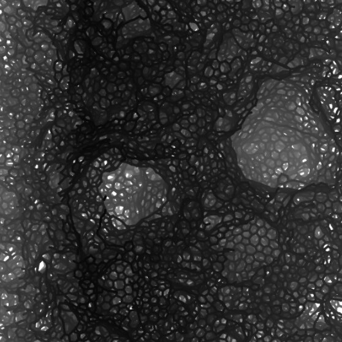

The thread through all of it: what happens at the interface between an electrode and an electrolyte while a battery is running, and how to see it both in simulation and at a synchrotron. Every figure and clip below is descriptive; the underlying data live in the papers on the publications page.
Speciation in lithium-sulfur batteries
Lithium-sulfur cells promise about three times the energy density of today's lithium-ion packs from an element that is cheap and abundant. The catch is the chemistry. Sulfur passes through a cascade of soluble polysulfides on its way to Li2S, and those intermediates leave the cathode, shuttle to the anode, and quietly destroy the cell.
I use a hybrid molecular dynamics/Monte Carlo approach to work out which species exist in the electrolyte at each state of charge, and pair that with quantum-chemical predictions of their vibrational fingerprints so they can be identified in operando infrared experiments. The simulated speciation agrees closely with what the experiments see.
Hybrid MD/Monte Carlo snapshot of polysulfides in a Li-S electrolyte.
Cathode-electrolyte interphase in lithium-ion batteries
The interface is where the battery magic happens. On the anode, a passivating film forms during the first cycles and protects the electrode afterwards. A similar film grows on the cathode, and it is far less understood: how it forms, what it is made of, and how it changes with the electrolyte.
I combine reactive molecular dynamics with X-ray spectroscopy to follow the cathode-electrolyte interphase as it forms. The clip shows a ReaxFF simulation of a next-generation electrolyte reacting at a lithium manganese oxide surface. Understanding this film is central to fixing capacity fade and extending cycle life, which was the subject of our Advanced Energy Materials paper on Mn dissolution.
Reactive molecular dynamics of interphase formation on LiMn2O4.
Electric double layer in aqueous electrolytes
Within a nanometer of a charged electrode the electric field is enormous, and that field decides which ions and molecules reach the surface and react. The double layer therefore controls the side reactions that limit aqueous batteries and electrocatalysts, yet its role in those reactions has received much less attention than it deserves.
These molecular dynamics simulations of an aqueous CsCl electrolyte show how charge arranges itself at a negatively and a positively charged graphene electrode. Watch the ions swap places and the water reorient as the sign of the surface charge flips.
Sodium-ion cells are the quiet workhorse option for grid storage, and hard carbon is their standard anode. The open question is how sodium fills the pores and defects of this disordered material as the cell charges, and how that depends on the way the carbon was made.
I build atomistic models of hard carbon by simulated annealing: heating and quenching thousands of carbon atoms until they settle into the curved, layered fragments seen in real samples. The resulting pore size and shape distributions feed the interpretation of X-ray scattering data in our Small paper on microstructure-dependent sodium storage.


Simulated annealing (temperature ramp, then quench) of a hard carbon model, and a slice through the result.
Machine-learned interatomic potentials
Quantum chemistry is accurate but slow; classical force fields are fast but rigid. Machine-learned potentials trained on quantum-chemical data close that gap. During a 2024 internship at Lawrence Livermore National Laboratory I worked on such potentials for lithium-ion battery electrolytes, so that solvation and reactivity can be simulated at the size and time scales a real interface demands.
Molecular dynamics in one loop: forces, velocity-Verlet update, repeat. From the animations page.